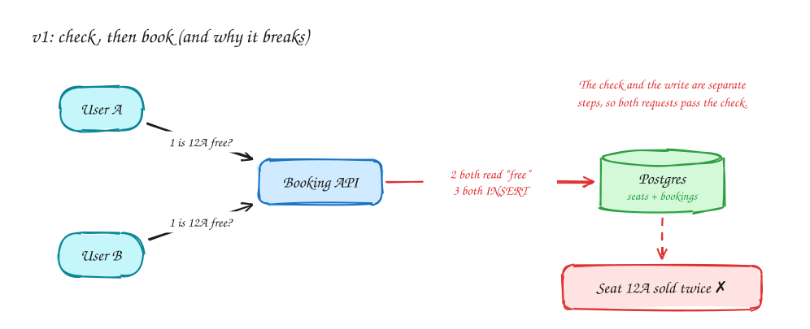
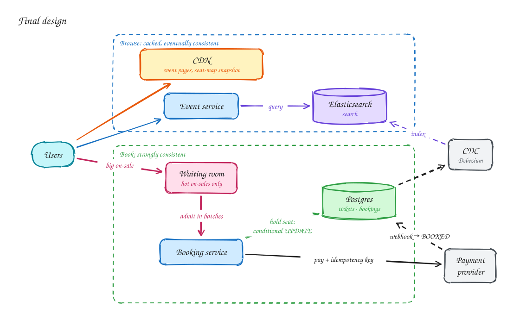
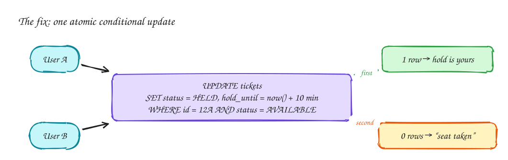

Ticketmaster: selling seats without selling any seat twice¶
Advanced
Difficulty: Medium · Patterns: Dealing with contention · Scaling reads · Core concept: Caching · DDIA: Ch 5 Replication, Ch 7 Transactions
Tip
One-page sketchnote: TICKETMASTER on a single page, for revision or printing.

TL;DR¶
- Two very different paths share one system. Browsing events is enormous, read-only traffic that can be slightly stale, so cache it hard. Booking is small but must be exactly right.
- The core bug is check, then book: two people both see seat 12A as free and both buy it. Fix it by making the check and the write one atomic statement in the database.
- For a huge on-sale, don't let 10 million people hit the booking path at once. A virtual waiting room admits them at the rate the system can actually handle.
1. Requirements¶
Functional (what users can do)
- View an event and its seat map.
- Search for events by name, date and location.
- Book tickets: pick seats, hold them while paying, then confirm.
Out of scope for this page: resale, dynamic pricing, recommendations.
Non-functional (how well it must work; these drive the design)
| NFR | Target | Why it matters here |
|---|---|---|
| Consistency (booking) | A seat is never sold twice | This is the whole product. Choose consistency over availability on this path. |
| Availability (browse) | Event pages and search stay up during spikes | Choose availability; a seat map that's a few seconds stale is fine. |
| Latency | Event page p99 < 300 ms, search p99 < 500 ms | Fans refresh constantly during an on-sale. |
| Scale | ~10M users arrive for one popular on-sale | Traffic is extremely spiky, not steady. |
| Hold time | A held seat is reserved ~10 minutes during checkout | Long enough to pay, short enough not to block others. |
2. Back-of-envelope numbers¶
- A stadium has roughly 50k–100k seats. That is the ceiling on successful bookings for one event, however many people show up.
- 10M fans refreshing every few seconds is millions of reads/sec, but nearly all of them are identical page views. That makes them ideal for a CDN or cache.
- So the read path needs to absorb millions of requests/sec, while the write path handles at most ~100k bookings spread over minutes.
Tip
Say this in the interview: "Reads and writes differ by orders of magnitude here, so I'll design two paths: a cached, eventually consistent browse path and a small, strongly consistent booking path."
3. Core entities and API¶
| Entity | Key fields |
|---|---|
Event |
id, venue_id, name, date |
Ticket |
id, event_id, seat, price, status (AVAILABLE / HELD / BOOKED), hold_until, user_id |
Booking |
id, user_id, ticket_ids, payment_status |
GET /events/{id} → event details + seat map
GET /search?q=&date=&location= → events
POST /bookings/hold {ticket_ids} → booking_id, hold_until
POST /bookings/{id}/confirm → called after payment succeeds
Every POST carries an Idempotency-Key header so a retry never creates a second booking. The user id comes from the auth token, never from the request body.
4. v1: the simplest design, and where it breaks¶

One API server and one Postgres database. To book, the API reads the seat, sees AVAILABLE, then inserts a booking.
What breaks: the read and the write are two separate steps. Two requests that arrive within milliseconds both read "free" before either has written, and both succeed. Adding more servers makes this more likely, not less.
This is a write skew: each transaction is fine on its own, but together they break the rule "one seat, one buyer". Most databases don't prevent it at their default isolation level. Postgres defaults to Read Committed.
5. Final design¶

| Component | Why it exists |
|---|---|
| CDN | Serves event pages and a seat-map snapshot from the edge, so millions of identical reads never reach your servers. |
| Event service + Elasticsearch | Search by text, date and location. Elasticsearch is a derived copy, kept in sync from Postgres by change data capture (CDC), never written to directly. |
| Waiting room | Only switched on for hot on-sales. Users join a queue and are admitted in batches, so the booking path sees steady, survivable load. |
| Booking service | Holds seats with one atomic conditional UPDATE (see the deep dive), then confirms after payment. |
| Postgres | The single source of truth for tickets and bookings. One primary is enough, because booking volume is capped by seat count. |
| Payment provider | Called with an idempotency key. Its webhook flips the booking from HELD to BOOKED. |
6. Deep dives¶
6.1 How exactly do we stop double booking?¶

Put the check inside the write:
UPDATE tickets
SET status = 'HELD', user_id = :user, hold_until = now() + interval '10 minutes'
WHERE id = :ticket
AND (status = 'AVAILABLE' OR (status = 'HELD' AND hold_until < now()));
The database locks the row while it applies the update, so concurrent requests are serialized. 1 row updated means you hold the seat. 0 rows means someone else got there first.
Notice what we didn't need:
- No background job to release abandoned holds. An expired hold simply satisfies the
WHEREclause again. - No long transaction while the user pays. The hold is a row state, not an open lock, so the database never waits on a human.
Alternatives, and when they fit:
| Option | Good when | Watch out for |
|---|---|---|
Conditional UPDATE (above) |
Default. Single database. | None for this problem. |
SELECT … FOR UPDATE |
Multi-step logic on a few rows | Holding locks too long; deadlocks across several seats. Lock seats in a fixed order. |
Redis SET seat:12A user NX EX 600 |
Holds shared across services; very hot seats | Redis is not the source of truth, so still write the final booking to Postgres. Locks need fencing if a process can pause. |
6.2 Ten million people at 10:00:00¶
Without protection, everyone hits Book in the same second. Even a correct database melts, and users see errors instead of "sold out".
Virtual waiting room:
- Users who arrive before the on-sale get a queue position (Redis sorted set, score = arrival time).
- Every few seconds, admit the next N users. N is chosen from what the booking path can sustain.
- Push "it's your turn" over SSE. Admitted users get a short-lived token that the booking service checks.
The booking service only ever sees the load you planned for, and users get a fair, honest wait instead of errors.
6.3 The seat map is stale. Is that a bug?¶
No, as long as you're deliberate about it. The seat map is a snapshot served from cache or CDN and refreshed every few seconds. A user might click a seat that was taken a second ago, and the conditional update simply tells them so. The browse path is allowed to be wrong; the booking path never is.
6.4 What if payment times out?¶
The outcome is unknown: the card may or may not have been charged. Keep the booking HELD and retry with the same idempotency key, or ask the provider for the status of that key. Never start a second charge. The webhook is the source of truth for the final state, and it must be idempotent too, because providers deliver webhooks more than once.
7. Interview script (45 minutes)¶
| Time | What you do | What you say |
|---|---|---|
| 0–5 | Functional requirements | "Users can view events, search, and book seats with a short hold during checkout." |
| 5–8 | NFRs | "No seat sold twice: that path is CP. Browsing must survive huge spikes: that path is AP." |
| 8–10 | Numbers | "Bookings are capped by seat count (~100k); reads are millions per second and identical." |
| 10–13 | Entities + API | Ticket with status and hold_until; hold and confirm endpoints with idempotency keys. |
| 13–22 | v1 and its bug | Draw v1, then show the check-then-book race with two users. |
| 22–30 | Fix | Conditional UPDATE; why no cleanup job is needed; why no long transaction. |
| 30–40 | Scale | CDN + cache for browse; Elasticsearch via CDC for search; waiting room for on-sales. |
| 40–45 | Wrap-up | Payment timeouts and idempotency; what you'd monitor (hold success rate, queue length, p99). |
Staff-level lens¶
| Question | Staff answer |
|---|---|
| The real problem | No seat sold twice while 10M people arrive at once. |
| Deciding number | ~100k seats vs 10M users: bookings are capped, reads are not. |
| Staff call and trade-off | Conditional-update holds; virtual waiting room; browse is AP, booking is CP. Accept fans waiting in a queue. |
| Raise before you're asked | Payment timing out while the hold expires; bots; the read storm hitting the booking database. |
| Senior stops at | Row locking. |
| Staff goes on to | The waiting room as load control, bot mitigation and fairness, shielding the booking path. |
| Run it | Watch hold success rate, queue length, admit rate, booking p99. |
All 29 problems through this lens: Staff-level answers.
8. Common mistakes¶
- Check, then insert in application code. Correct-looking, wrong under concurrency.
- Holding a database transaction open while the user pays. Locks pile up and throughput collapses.
- Using Redis as the only record of a booking. Redis is a fine place for holds, but the booking must land in the durable database.
- Treating browse and book the same. Making browsing strongly consistent wastes money; making booking eventually consistent sells seats twice.
- Sharding the bookings database "for scale". Booking volume is capped by seat count; one primary handles it.
Self-check¶
Try to answer before you open each one.
What is the core double-booking bug?
Check, then book: two people both see the seat as free, then both buy it.
How do you fix it?
Make check and write one atomic statement, for example a conditional update on the seat (WHERE status = available), or a short reservation with a TTL.
How do you survive ten million people at on-sale time?
A virtual waiting room admits users at the rate the booking path can handle; browsing is cached separately.
Related¶
- Patterns: Dealing with contention · Scaling reads
- Core concepts: Caching
- DDIA: Ch 5 Replication for why replicas can serve a stale seat map; Ch 7 Transactions for write skew and why the default isolation level doesn't save you.
- Similar problems: Online auction (contention on one row) · Local delivery (decrement stock without overselling) · LLD: Movie ticket booking